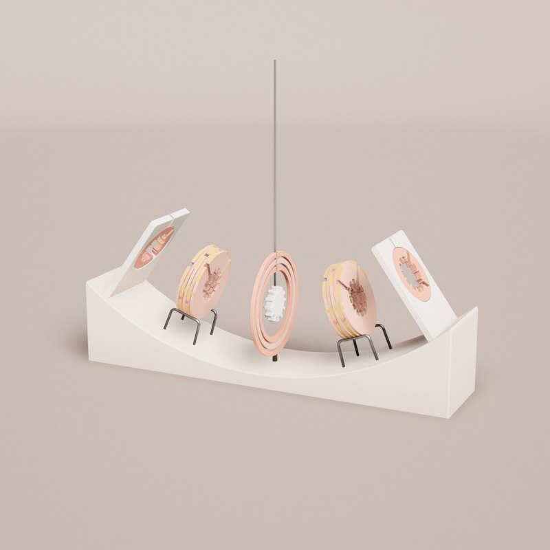
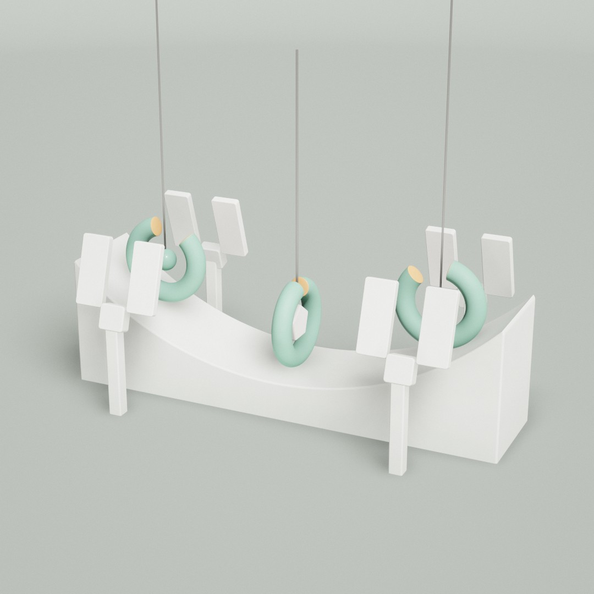
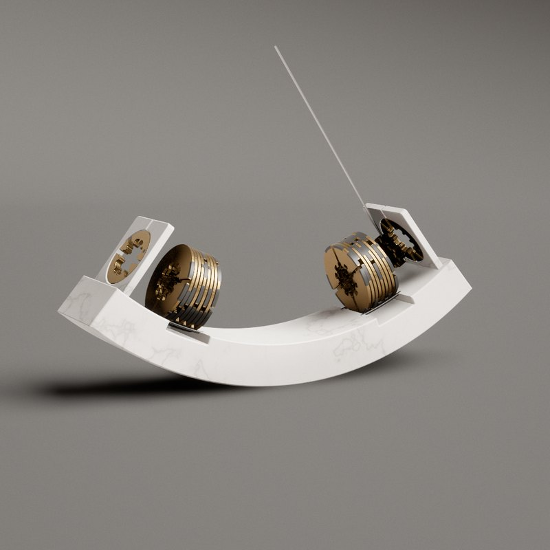
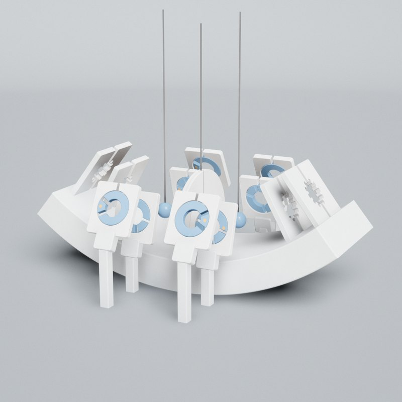
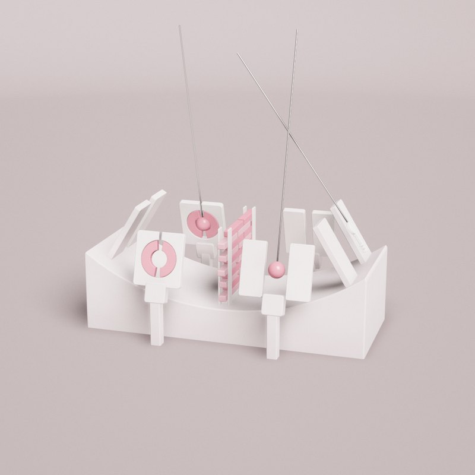
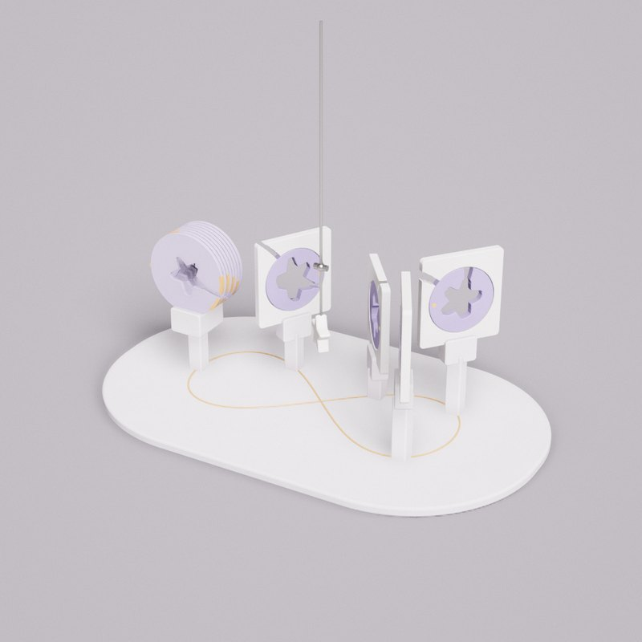
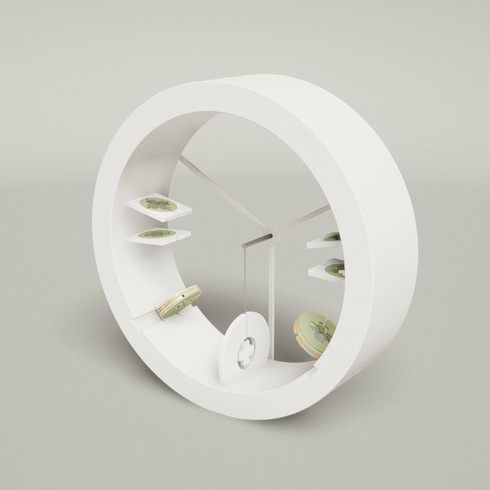
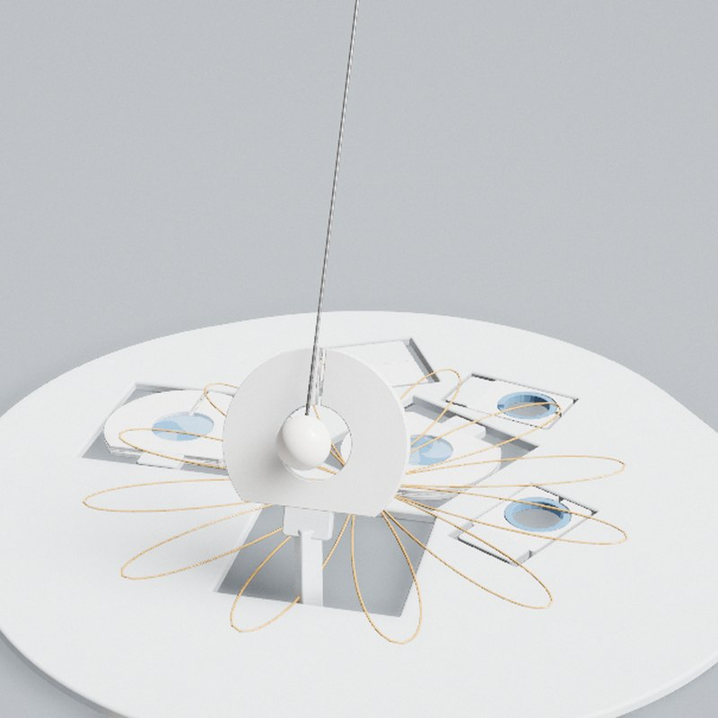

Rings and tunnels
The rings hero at the bottom, tunnels of thin discs either side, keyhole plates further up. The base drops away under the rings, so the tunnels' rails stand on bent legs.
A pendulum swings through gate after gate that turn, slide and open into line just in time. Here is how a new contraption is designed and built around a swing solved exactly, how every hole is cut by the swing itself, how the gates keep time, and how the whole thing comes and goes.
See it live
The day comes from the "oddly satisfying" machines of looping animation: a weight swings, and everything in its way moves aside at the last moment, then closes behind it. Discs turn their keyholes into line as the bob arrives, a wall of bars shuffles open, an iris spirals back, rings spinning like coins come face on. Nothing ever touches; every miss is a matter of millimetres.
None of it is animated by hand. Each press of R designs a contraption from a seed: a layout, a bob, a hero mechanism at the bottom of the swing, supporting gates either side, now and then pendulums swinging across it, a finish. Then it is built: every moving piece is a slab whose holes are cut by the swing itself, so whatever the bob's shape and however the gates move, they fit. The same seed always builds the same contraption.

The rings hero at the bottom, tunnels of thin discs either side, keyhole plates further up. The base drops away under the rings, so the tunnels' rails stand on bent legs.

A rocker whose tips are sockets, with tunnels whole in open trenches through the stone, riding on two rails.

Five blades on pivots, shut between passes and spiralling open as the bob comes, inside a housing with a slot for the rod.

Bars sliding apart into a tunnel for the bob, with crossing pendulums threading their own gates either side.
A gate that has to be in line the moment the bob arrives needs to know exactly when that is, forever. So the swing isn't stepped through time at all: its angle is a closed formula of time. A pendulum released from amplitude A swings as θ(t) = 2·asin(k·sn(ω₀t, k²)), where k = sin(A/2), ω₀ = √(g/L) and sn is the Jacobi elliptic sine; its period is 4K(k²)/ω₀, with K the complete elliptic integral of the first kind. Both are computed with the arithmetic–geometric mean, to machine precision, in a dozen steps. There is no small-angle approximation: at the 40–55° the day swings, that would be 3–6% out, and a gate a few swings in would be visibly late.
Time 0 is a pass through the bottom, swinging toward positive angles. The inverse is exact too: timeTo(angle) is the incomplete elliptic integral F, so for any station on the arc the two times in a period when the bob passes it are known in closed form, and every gate's motion is written as a function of those times. Pausing, changing speed, slow motion and scrubbing all just move the clock.
The plane swings use a 2 m pendulum (the ring layout 1.25–1.45 m, swinging up to 115–150°), with g = 9.81, so a period is about 3 s.
The exact swing (solid) against the sine a small-angle model would give (dashed), at the same amplitude. At the day's angles the two come apart within a few swings; the ring layout's 150° swing spends most of its time crawling near the top.
Away from the bottom, a gate is passed twice a period, and the two gaps between passes aren't equal: a short one while the bob goes on up toward the top and comes back, and a long one while it swings out the other side. A gate that turns at a constant rate and has to be in line at both passes needs those gaps to stand in a small whole ratio, so stations are chosen where they do: the gaps 3 : 4, 2 : 3, 3 : 5, 1 : 2, 2 : 5, 1 : 3, 1 : 4 or 1 : 5, each solved exactly with stationForRatio. A disc there turning p + q steps a period lands on a step at every pass.
Supporting gates go in mirrored pairs at those stations, out from the hero, keeping clear of each other and of the sockets at the top of the swing; how far each reaches along the arc is known per family (a tunnel's 8–12 discs 3.3 cm apart, a ring cage half a metre).
Slide the gate up the arc (as a fraction of the amplitude). At the bottom the two gaps are equal; toward the top the short one shrinks to nothing. The day only puts steady gates where the ratio is one of the small whole ones.
Every moving piece starts as a plain 2D outline: a disc, a bar, a plate, a blade. Its holes are whatever the bob and its rod pass through it. For each pass of the piece over a whole loop of the contraption (twelve periods, or one loop of a gimbal), the cutter steps through the window in which the arm is within reach of the piece's slab, in steps fine enough that the turning piece moves no more than about a millimetre between them, and the bob less than most of the slab's thickness (up to 500 steps), and at each step rasterizes the bob and rod, as triangle soups in the piece's own frame, into the piece's grid, clipped to the slab's thickness. Passes that find the piece in the same pose going the same way are only cut once.
The union is turned into a distance field by a distance transform, and the piece's outline is compiled into a signed-distance function (circles, rounded rectangles, polygons, stars, wedges, combined with unions, subtractions and clips). The two are combined so the solid is the outline minus everything within the clearance of the swept volume, 4 mm by default and anything from 1 to 20 on the panel. The result is contoured, simplified and smoothed (Taubin), and extruded with rounded edges into a slab: a keyhole disc's grid cell is 1.25 mm. All of it runs in a web worker, batch by batch, while the old contraption is still leaving.
So the fit is exact by construction. A gate that turns while the bob is inside it gets a hole that is the union of the bob's outline at every angle it was at, which is why steady discs have slightly wider holes than ones that hold still for the pass. Bobs come in eight kinds: stars, polygons, crosses, gears, flowers, a key, a sphere and Blender's Suzanne; the flat ones are prisms of their outline, thin along the swing, 13–17 cm in radius.
A cross-shaped bob passing through a disc. Each stamp is the bob in the disc's frame at one moment of the pass; the hole is their union, grown by the clearance. A disc that holds still for the pass (0°) gets a hole the bob's shape; one that keeps turning gets the shape swept round.
Every gate is a set of pieces in a frame square to the path at its station, each with a motion (a function of time) and a support (what holds it up, for the physical mode). The hero goes at the bottom of the swing (or, now and then, as a mirrored pair part way up); supporting gates are keyholes, shutters and short tunnels.
The iris follows a real camera iris: five identical blades, each turning on a fixed pivot at the housing, with a pin riding a slot so that all of them turn together. Each blade is a crescent traced from a measured diagram, turned 72° from the next, overlapping like shingles; they are thin sheets 1.5 mm apart in a stack between a front and a back plate, with a rim between the plates closing the housing just beyond the blades' reach. A gap is left between two blades for the rod, which is harmless: when the blades are drawn back for the pass, the rod runs through it.
The rings all spin steadily, at different speeds: the innermost half a turn between passes, each one further out a half turn more, and neighbours the opposite way, so they all come face on together as the bob comes through. A ring's marker dot tells them apart as they cross.
A tunnel sits whole in an open trench cut through the base, 3.5 cm below its discs and as long as the stack, open at both faces so the discs are seen turning all the way round. They ride on two steel rails, 2.4 cm round, either side of their lowest point (30° from it) and set into the trench's end walls. Where the base lies further down, as under the rings, where it drops away so their sweep clears it, there is no trench: each rail bends down at its ends through a 4 cm curve into a leg of the same rod.
Every piece's motion is plain data both the page and the cutting worker evaluate the same way. In constant motion (the default), nothing ever stops: a turning part spins at one steady rate and lands exactly in line at every pass, like the rings. Its rate is a whole number of steps a period, the slowest that needs little correction: up to a turn a period first (three whole turns physically), then up to two, and whole turns every loop so the grand alignment holds. Where the two gaps don't split the period exactly as the steps do, the speed swells and eases once a period, a sine with no effect at the passes' midpoint, sized so both passes land exactly: a few per cent typically, a third at worst. Keyholes stand where no swell is needed.
A tunnel's discs differ in how many slits they have for the rod: a count dividing the bob's symmetry (a disc lines up again at every slit), set by each disc's distance from the tunnel's middle, so the tunnel is symmetric and its discs turn at different speeds, the fewer slits the faster; where a disc's count can't turn smoothly (far up the swing, the gaps very uneven), it takes more. Opening parts (shutters, bars, irises) swing smoothly shut and back between passes, open only while the bob goes through.
Quick motion is the first version: pieces wait, then snap into line. A tick moves right after the bob clears, with a little overshoot; a burst drifts back, then dashes over and lands just before the next pass; a spin turns like a coin over the same window. Shutters, bars and the iris open over 0.12–0.26 s around each pass.
Every turning part makes whole turns (half turns for even bobs) every period or two, so every so often everything comes round at once: the grand alignment. Each turning part carries a gold mark placed so that at time 0 all of them face front, a stripe along each tunnel disc's rim lining up into one bar, a dot on each keyhole disc and ring. When they come round, a bell rings and the marks glow for half a second.
A disc at a station turning at the day's chosen rate. Below, how far it runs ahead of a plain constant rate, over two periods; each circle is where it has to be at a pass (the grey lines) for a slit to be straight up the rod. Without the swell the curve stays flat and misses the circles unless the gaps happen to split as the steps do; with it, the curve goes through every one, for a gentle change in speed once a period.
Click a gate and it jolts: a disc spins the way the click pushes it, harder the further from its axis (up to 9 radians a second); a sliding piece is shoved 0.9 m/s the way of the click. The jolt is a quintic put on top of the piece's schedule: from its offset and speed at the knock to an offset its own cut pattern repeats under (a whole symmetry step for a turning part, zero for a sliding one), at rest and with no acceleration, by the next moment the arm comes within reach of the piece. So it is always back in line before the bob comes: the later the knock, the shorter the curve and the gentler it is, and none is taken while the bob is close. A shutter half can only be pushed open, not shut; a bar can't be pushed off its track; an iris's five blades share one knock, as their actuator ring would.
The offset a knock adds, over time; the shaded bands are where the arm is within reach. A knock early in a gap swings out far and eases back; one just before a band has little time, so it comes out small. Each ends on a whole step, at rest, before the band.
The base is an outline in the swing's plane, extruded across it, deep enough that nothing a gate hides in it shows through its sides. A block is a slab with the swing's circle cut out of its top; a rocker is a band round the pivot, its tips sockets; posts give each gate a short piece of band on a column down to the floor; the ring stands on the floor round its pivot, its axle held from behind by a spoked hub, with a shorter pendulum swinging most of the way round. The base comes up to just under each gate: further down under the rings, so their sweep clears it, and up to just under a torus's lowest point.
The gimbal hangs its bob from two hinges, one above the other: the upper arm swings about one axis and the lower one, hinged at its end, about the other, each solved exactly as its own pendulum at frequencies 1 : 2 or 2 : 3 (the upper over the bob's whole distance from the pivot, 2.2 m, the lower over its own arm), so the bob draws a closed figure eight or pretzel, inlaid in gold on a plinth like a harmonograph's drawing. The bob turns on a swivel to face the way it goes. Its gates stand upright along the loop on pedestals and columns, each placed only where nothing of the swing ever comes near it but its own pass: its box is checked against the bob, the lower rod and the upper arm at every sample of the loop. Its tunnel is a straight stack on one pedestal, square to the path at its middle disc, each disc cut and timed for its own pass.

A 1 : 2 swing drawing a figure eight, its gates on columns along the loop, a straight stack of discs at one end.

A shorter pendulum swinging up to 150°, slowing to a crawl through the gates near the top.
The bob's path from above. The gimbal's two swings at a whole ratio close into a loop; the Foucault pendulum's plane turns a whole turn every few swings, so each swing ends at its own place and the path is a rosette. The dots on the rosette are where its gates could stand, one per swing on a lobe's long side; the highlighted one is up.
The Foucault pendulum is one long arm whose swing plane turns steadily round the upright, a whole turn every six or eight swings, at 43–46°; it is built on the gimbal's machinery, as a path with the same interface, so its gates are placed, cut and timed the same way. Its gates can't stand anywhere for good: every swing goes somewhere new, and its neighbours' swings cross where a gate would be. So they live in slots in the plinth and come up only for their pass.
Each swing gets one gate, a keyhole cut down to the bob, a pair of shutters or an iris, on one of its lobe's long sides, 45–85% of the way out, square to the swing there. Down, it lies flat in its slot, flush with the plinth, face up or down, along the swing or across it, whichever keeps its slot clear of the others' (so 4 to 10 fit). For its pass, its column telescopes up out of the slot and the gate turns upright into place on top of it, pivoting on its foot so that the foot never leaves the column: the rise leads and the turn finishes after it, 0.45 s in all. It stays up 0.14 s either side of the pass and folds back down the same way, with a slide and a thump. Passes are at least 1.29 s apart, so only one gate is ever up.
A gate is checked against the swing only while it is up or on its way, in the exact pose it has at each moment, column and all, so it can stand where the other swings cross. While up, a keyhole spins steadily, a third to half a turn a second, landing in line as the bob goes through; shutters and irises snap open for it, which is all a second's view shows.

The rest lie flat in their slots; this one has come up on its column and turned into place for the bob.
Some contraptions add a pair of pendulums swinging across the main plane, one either side of the bottom of its arc, at the same period and a smaller swing (24–34°, their length solved for the same period), with balls 7.5–9.5 cm in radius. They swing in opposition, scissoring past each other, and in step with the main one: each crosses the main plane as the main bob passes the bottom, so the main bob passes just behind it. Their stations are solved so the closest approach over a whole period, bob against bob and each rod against the other's bob, is 2.5 cm. They thread gates of their own, keyholes and shutters on posts either side.
With the torus as hero, a crossing turns into sharing. Half the time a single crosser hangs through the bottom of the main swing, a quarter period out of step, and the torus, spinning at the single rate (half a turn between passes), is face on to each in turn. The other half both crossers stay, and each gets a torus of its own where it crosses the main path, an eighth of a period past the bottom: spinning at the double rate, each is face on to the main bob as it passes, and a quarter turn later face on to its crosser, which goes through at the bottom of its swing, while the main bob has its own torus at the bottom. Three pendulums, three tori.
A torus isn't cut. Its tube (6 cm plus a tenth of the bob's radius) is opened up until, spinning, it clears every ball going through by 12 mm, sampled over each pass; its slit is worked out from every rod through it: each rod is sampled over a period, the torus turning under it, and every angle round the tube at which a rod comes within reach of the tube's centre line goes into the slit, plus room for the gold domed ends. One rod through the top needs about 18°; a crosser's upright rod, at an angle to the main one, opens it to one side, to about 60°. Out of step, a shared pair is never at rest together, so that set is caught and let go wherever nothing is near a gate.
The cut is ruthless: a bob's sweep can split a slab into pieces nothing holds. The Physical switch (off by default) keeps every piece held by something, without changing the designs: each piece has a support (its bottom in the base, a rim in a housing, a single cradle, guide columns for sliding bars, a pin), fragments the cut leaves unsupported are removed, and the design keeps to what can be held: turning parts make whole turns between passes so a disc keeps a single slot for the rod, wall bars slide no further than keeps both halves between their columns, shutter halves keep their feet on a pedestal however far they part, rocker and ring bands reach the floor, and gimbal shutters split along the rod. With it off, a few hundred loose fragments are counted over thirty designs; with it on, about one sliver.
A new contraption is designed and cut in the worker while the old one is still there. It leaves on its last swing: each gate flies up as soon as the bob has passed it for good (0.6 × 0.85 s flights, launched up to 0.09 s apart), the pendulum is whisked up from the top of that swing, the gates it hung over follow, and the base goes last. A ring's gates slide forward out of it first. Then the backdrop and floor ease to the new look over 0.6 s, the new base comes down and lands with a centimetre's dip, its gates drop in one by one (0.85 s each, up to 0.22 s apart, 1.6 s for the lot), and the pendulum is lowered last and let go from the top of its swing; the gates run in step all the while, so everything is in line the moment the bob moves. A gimbal's bob, never at rest, is caught and let go wherever it is clear of every gate, easing up to speed. Each piece's shadow shrinks away as it leaves, so none is left on the floor once it's gone. Instant change cuts straight to the next one instead, the camera with it.
Slow motion eases time right down, to a twenty-fifth, as the bob goes through each gate (a bell curve 0.09 s of pendulum time either side of the pass) and picks up again between. Everything goes with it: each sound plays slowed and lowered by the pace at its moment (down to 0.15 of its speed) and timed by the pace on the way to it, the air past the bobs drops with their real speed, the grand alignment's bell rings lower, and the camera drifts slower. Pendulum view rolls the camera about its line of sight to the pivot so the rod stays upright on screen while the rest swings round it.
app.nextLook, stage.pace (faster comings and goings), director.orbit and an offline soundtrack timed by the capture's clock.The sound is made from the motion, not the other way round. Every frame, the foley looks 0.12 s ahead and schedules what happens in that window from each piece's motion: a tick and a clack for a clockwork step, a slide and a latch for a burst, a shift for a shutter, a clack as it closes, a soft slide for a steady wave, a pop for a socket, and a swish of air through every gate as the bob passes, louder and brighter the faster it goes. Each is a one-shot from a set of 73 CC0 recordings in 17 kinds (ticks, clicks, latches, ratchets, bolts, cogs and more), a random variant at a slightly random pitch, panned by where the gate is on screen, with at most 32 voices and a minimum spacing per kind so a cascade becomes a patter. The air past each bob is a loop of brown noise through a low-pass that opens and swells with its speed; the swish is a short burst of the same, swept up and back down. The bell is synthesized, five inharmonic partials each dying away at its own rate.
The day renders through the shared pipeline: soft PCSS shadows from a key light high to one side, half-resolution ambient occlusion and one bounce of light (GTAO and SSIL), MSAA, AgX tonemapping, and a touch of grain and vignette. Motion blur over a 1/90 s shutter (16 samples) streaks the bob at the bottom of its swing and the fastest discs. Clay is rough and matte, the stones are veined procedurally, brass is a polished metal, and the gold marks are an accent glaze that glows when everything lines up. At high quality on a laptop GPU a frame costs about 1.6 ms.